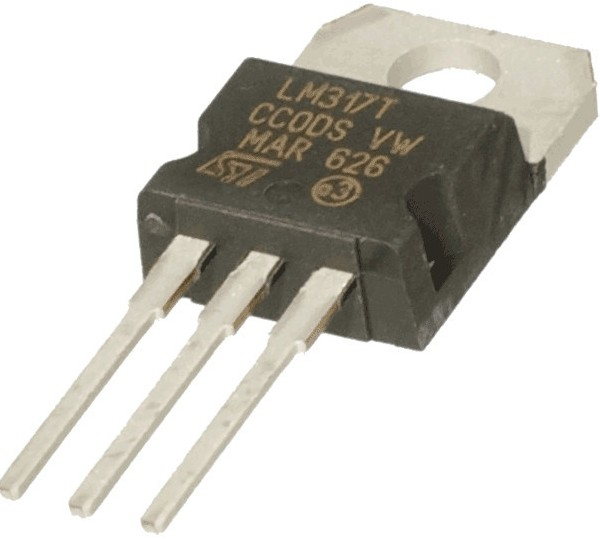
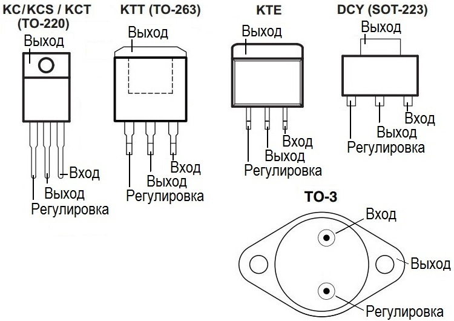
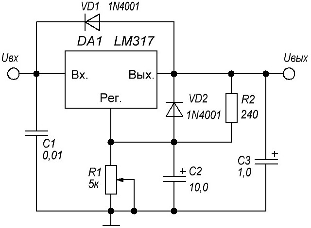

Стабилизаторы LM317 и LM317T
Основное назначение стабилизаторов LM317 и LM317T - это стабилизация положительного напряжения. Регулировка происходит линейным способом, в отличие от импульсных преобразователей. LM317 и LM317T полностью идентичны по параметрам, букв «T» в конце маркировки обозначает корпус TO-220 на 1,5 А.

Рис. 1 - Внешний вид стабилизатора LM317 в корпусе ТО-220

Рис. 2 - Варианты корпуса стабилизатора LM317
Таблица 1
| Параметр | Значение |
|---|---|
| Максимальное входное напряжение | 40 В |
| Диапазон выходного напряжения | 1,.2 ... 37 В |
| Выходной ток | 1,5 А |
| Нестабильность по нагрузке | 0,1% |
| Температура эксплуатации | 0...125 °C |
| Опорное напряжение | 1,25 В |

Рис. 3 - Типовая схема включения стабилизатора LM317
Источники
led-obzor.ru - LM317 И LM317T СХЕМЫ ВКЛЮЧЕНИЯ, DATASHEET